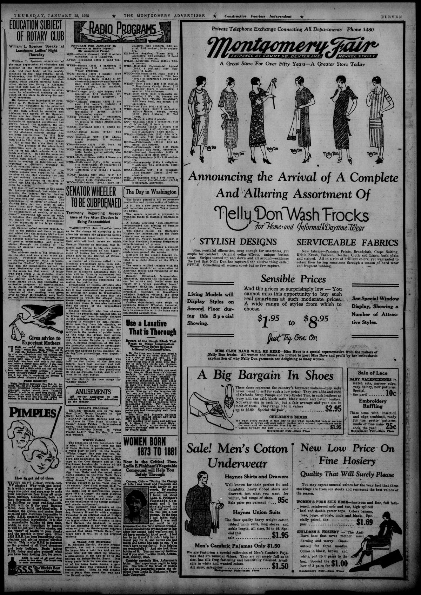

The Day in WashingtonEl día en Washington
The Montgomery Advertiser. Montgomery, Ala., January 22, 1925. Page 10. Published by Screws, Cory & Glass. A daily newspaper, 1885–1982.The Montgomery Advertiser. Montgomery, Ala., 22 de enero de 1925. Página 10. Publicado por Screws, Cory & Glass. Periódico diario, 1885–1982. View the originalVer el original

The Montgomery advertiser reported that the U.S. Senate formally ratified treaties with the Dominican Republic governing the evacuation of American military forces and the refunding of the Dominican national debt.El Montgomery advertiser informó que el Senado de Estados Unidos ratificó formalmente los tratados con la República Dominicana que regulaban la evacuación de las fuerzas militares estadounidenses y el refinanciamiento de la deuda nacional dominicana.
FULL TEXT:TEXTO COMPLETO:
The Day in WashingtonEl día en Washington
The house passed a bill to promote production and conservation of helium.La cámara aprobó un proyecto para promover la producción y conservación del helio.
A bill for a new American embassy and consulate general in Tokio passed the house.Un proyecto para una nueva embajada y consulado general estadounidense en Tokio pasó la cámara.
The senate rejected a proposal to withhold funds to maintain marines in Haiti.El senado rechazó una propuesta de retener fondos para mantener infantes de marina en Haití.
A senate elections sub-committee recommended the seating of Senator Mayfield, democrat, Texas.Un subcomité de elecciones del senado recomendó la toma de asiento del Senador Mayfield, demócrata, Texas.
The senate called on Secretary Hughes for information on the Paris reparations agreement.El senado pidió al Secretario Hughes información sobre el acuerdo de reparaciones de París.
Heber H. Votaw, brother-in-law of the late President Harding resigned as superintendent of prisons.Heber H. Votaw, cuñado del difunto Presidente Harding renunció como superintendente de prisiones.
The naval bill, containing a request that President Coolidge call an arms conference, passed the senate.El proyecto naval, conteniendo una petición de que el presidente Coolidge convoque una conferencia de armas, pasó el senado.
Members of the senate foreign relations committee and others were invited to a night dinner at the White House.Miembros del comité de relaciones exteriores del senado y otros fueron invitados a una cena nocturna en la Casa Blanca.
The senate ratified treaties with the Dominican republic on evacuation of American troops and refunding of the Dominican debt.El senado ratificó tratados con la república dominicana sobre la evacuación de tropas estadounidenses y la refundición de la deuda dominicana.
Senator Shipstead, farmer-labor, Minnesota, charged the increased prices for stocks and bonds were the result of a “stock gambling boom.”El Senador Shipstead, granjero-laborista, Minnesota, acusó que los precios aumentados de acciones y bonos fueron el resultado de un «auge de juego bursátil».
Senator McKellar, democrat, Tennessee, presented a resolution asking President Coolidge to investigate whether England violated the arms treaty in building the battleships Rodney and Nelson.El Senador McKellar, demócrata, Tennessee, presentó una resolución pidiendo al presidente Coolidge que investigue si Inglaterra violó el tratado de armas al construir los acorazados Rodney y Nelson.
Justice department took steps to subpoena Senator Wheeler, democrat, Montana, to appear before a grand jury here in connection with the home state indictment against him.El departamento de justicia tomó medidas para citar al Senador Wheeler, demócrata, Montana, para aparecer ante un gran jurado aquí en conexión con la acusación en su estado natal contra él.